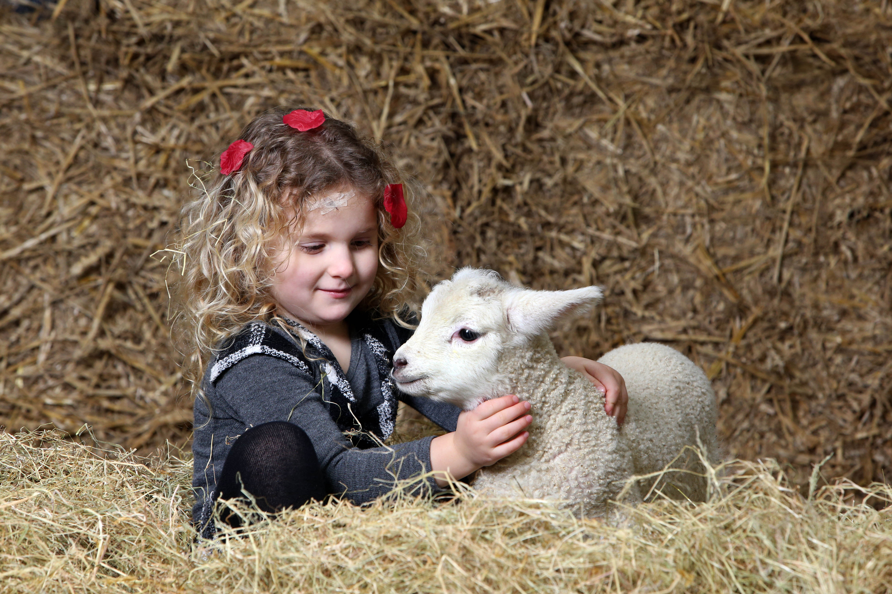
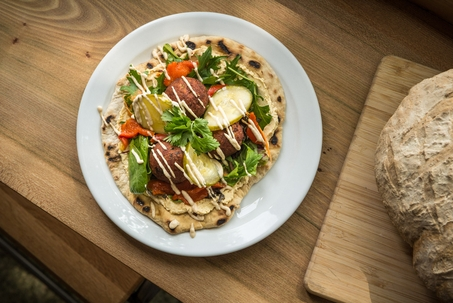
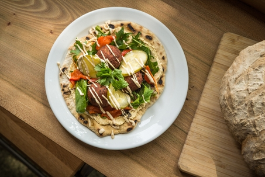

Come see all our wonderful attractions.
Petting Zoo
Cafe/Shop
Walks

Petting Zoo
Welcome to Borders Petting Zoo's main attraction: the petting zoo! Meeting our many friendly farm animals is a highlight of the day for most of our visitors. From tiny fluffy chicks to greedy goats and cheeky llamas, we’ve got hundreds of animals for you to see. Being a working farm, there are often baby animals to meet too, with lambs, piglets, chicks and calves to see throughout the year. As you explore the farm, you can learn all about the different animals and their breeds.
At different times throughout the day our staff will hold sessions where you can interact with the animals in many different ways, including feeding, petting, and even holding. Ask any of our staff on the day or check the time sheets for the activities and times coming up.

Café and Shop
After a long day out there's nothing better to do than sit back, relax, and have a cup of coffee. Thats why at Borders Petting Zoo we made a cafe right here for you, so after your day out you can come relax on one of our premium sofas and enjoy our special handmade traybakes, or freshly ground coffee.
Our broad snack menu has something for all the family, and if your spending the whole day here we have a special lunch menu filled with tasty bites to eat. Even better though, you arent restricted to the cafe seating, just order your food and you can sit outside and eat with the animals. Just be sure not to let them steal it!
Our menu is available in the cafe on the day, or from any of our staff, and just ask the waiters and waitresses for details on soup of the day and any recommendations you require.
 

Walks
We're as mad as you are about walks and have some great locations and landscapes to set tails wagging, with some good advice for dog owners visiting our places.
Little feet can tire easily, so we’ve picked some of our best walks for families with small children. Keep them entertained along the way with tree climbing, wildlife spotting and adventure playgrounds.
If you're looking for a route that will suit walkers of all ages and abilities, here are some of our favourites. These routes take you along well-maintained paths and easy terrain making them suitable for pushchairs, wheelchairs and mobility aids.